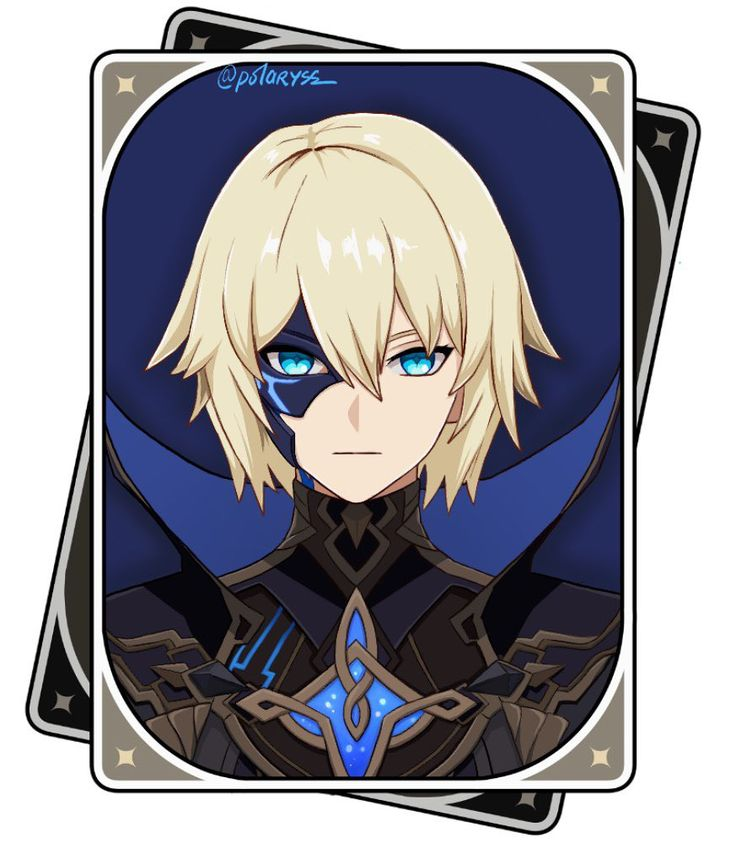
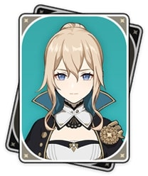

Latest Verified (and Questionably Verified) Sightings

She moves with the Abyss Order wherever its core forces gather.
Her presence leaves distortions in Irminsul’s records… faint, but deliberate.

Abyss activity increased beyond Mondstadt’s borders. A lone blonde figure was reported among them.
If she’s leading Abyss troops again, heh… that battlefield’s bound to get interesting.
We’ll find her eventually! Probably. Hopefully. Maybe?
Join the Lumine Search Task Force
Submit your intel, theories, screenshots, unverified sketches and suspicious diagrams. Every clue matters. Probably.